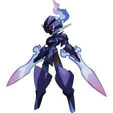

Ceruledge

Ceruledge adalah Pokémon humanoid berkaki dua. Tubuhnya sebagian besar berwarna hitam, meskipun beberapa bagian di kepala, lengan, dan kakinya berwarna biru tua. Dari setiap sisi kepalanya, tonjolan biru pucat yang tajam menjulur keluar, memberikan kesan telinga; dari belakang kepalanya, api biru dan ungu menyala ke atas, menyerupai bulu di helm ksatria. Matanya memiliki iris merah muda dan gumpalan yang keluar dari pupil putihnya. Sebuah lempengan dengan tiga lekukan merah muda di tengahnya menutupi wajahnya. Alih-alih tangan, Ceruledge memegang pedang berwarna ungu-sian yang terbuat dari api dan energi spektral—khususnya, penyesalan yang masih tersisa dari mereka yang gugur. Pedang ini dapat tumbuh menjadi pedang besar dalam pertempuran, meningkatkan kekuatan Ceruledge dalam prosesnya.